数列
【数列】
按一定规律排列着一列数，叫做数列.数列中的每一个数，叫做数列的项，第一个数就是第一项.第n 个数就是第n 项.数列也可视为定义域为自然数集N (或它的有限真子集{1，2，…，n} 上的函数f (x).当自变量从1开始依次取自然数时，相对应的函数值: f (1)，f (2)，…，f (n)，…，即数列是一种特殊的函数.
【数列的表示法】
列表法，即将数列各项一一列出来: a1，a2，a3，…，an，…；解析法，即写出数列的通项公式an＝f (n)；图象法，平面直角坐标系内，横坐标取自然数及与其对应的纵坐标所组成的点列便构成一个数列.
【数列的通项公式】
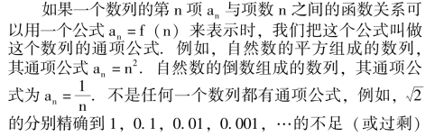
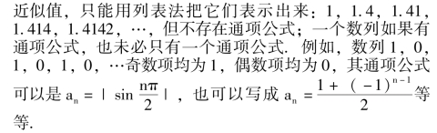
【有穷数列】
如果在某一项的后面不再有任何项，这个数列叫做有穷数列(即项数有限).
【无穷数列】
如果在任何一项的后面都有跟随着的项，这个数列叫做无穷数列(即项数无限).
【递增数列】
一个数列，如果从第二项起，第一项都大于它前面的一项(an＋1>an)，这样的数列叫做递增数列.
【递减数列】
一个数列，如果从第二项起，每一项都小于它前面的一项(即an＋1<an)，这样的数列叫做递减数列.
【单调数列】
递增数列和递减数列统称为单调数列.
【摆动数列】
一个数列，如果从第二项起，有些项大于它的前一项，有些项小于它的前一项，这样的数列叫做摆动数列.
【常数列】
一个数列，如果它的每一项都相等，这个数列叫做常数列.
【有界数列】
存在一个正数M，对于数列中任何一项an，都有｜an｜ <M，则称此数列为有界数列.
【无界数列】
一个数列，对于任意一个正数M，数列中总存在一个aN，使得｜aN｜ >M，则称这个数列为无界数列.
说明: ①有穷数列和无穷数列，递增数列和递减数列，单调摆动数列和摆动数列，有界数列和无界数列等是从不同的角度对数列进行分类的方法.考察一个数列的类型，也应从几个角度分别予以考虑.例如
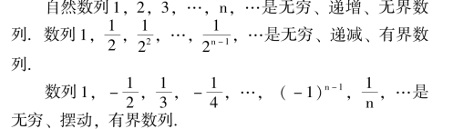
②公差为0 的等差数列和公比为1 的等比数列均为常数列；然而非零常数列既是等差数列又是等比数列，零数列是等差数列但不是等比数列.
【数列前n 项的和】
指的是a1＋a2＋…＋an，并记作Sn，即Sn＝a1＋a2＋…＋an.
【数列的前n 项和与通项公式的关系】
数列前n 项之和Sn＝a1＋a2＋…＋an.当n≥2 时an＝Sn－Sn－1，当n ＝1，S1＝a1.
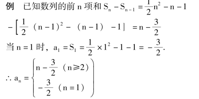
【等差数列】
一个数列，从第二项起每一项减去它前一项所得的差都等于某一个常数，这个数列叫做等差数列.这个常数叫做这个等差数列的公差.
【等差数列的通项公式】
an＝a1＋ (n －1) d.其中a1，d 分别是第一项和公差，n 为项数.通项公式的得出，可以根据等差数列的定义，归纳出来，并用数学归纳法给予证明，它对任何自然数n 都成立；
【等差数列的公差的求法】
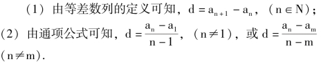
【等差中项】
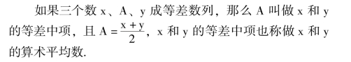
【等差数列的基本性质】
设{an} 是等差数列.(1) 有穷等差数列，距首、末两项距离等远的两项之和均相等，且都等于首末两项之和.即a2＋an－1 ＝a3＋an－2 ＝a4＋an－3 ＝…＝a1＋an.
(2) 若m ＋n ＝k ＋1，其中m，n，k，1 均为自然数，则必有am＋an＝ak＋a1.
(3) 等差数列中，其项数成等差的项构成的一个子数列仍是等差数列.
(4) 若数列{an} 和{bn} 均为等差数列，则对任意实数L 和K，数列{L·an＋K·bn} 仍是等差数列.
【等差数列前n 项的和】
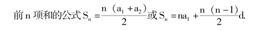
【等差数列前n 项和的最大值和最小值】
所有等差数列的前n 项和，都有最大值或最小值.当公差d>0 时，前n 项和有最小值(当a1>0 时，其最小值为S1)；当d<0 时，前n 项和有最大值(当a1<0 时，其最大值为S1).
【等比数列】
一个数列，从第二项起，每一项与其前一项的比都等于一个常数，这个数列叫做等比数列，这个常数叫做这个等比数列的公比.
显然等比数列的各项都不能是零.
【等比数列的通项式】
an＝a1qn－1，其中a1是首项，q 是公比，n 为项数.
【等比数列公比的求法】
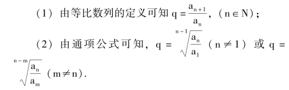
【一般数列的求和方法】
(1) 直接求和法，如等差数列和等比数列均可直接求和.
(2) 部分求和法将一个数列分成两个可直接求和的数列，而后可求出数列的前n 项的和.
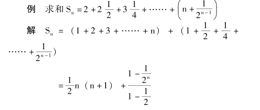
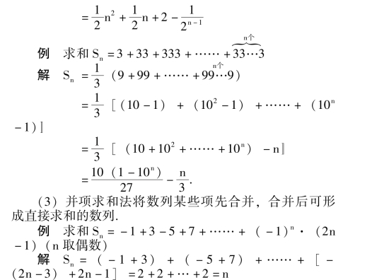
(4) 裂项求和法将数列各项分裂成两项，然后求和.
例 设{an} 是等差数列，且ai>0，i ＝1，2…，n.
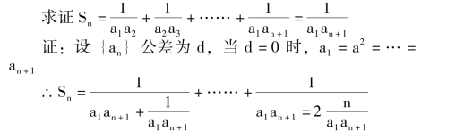
(5) “q 倍减” 求和法.若数列{an} 为等差数列，{bn} 为等比数列，则求数列{anbn} 的前n 项的和均可以采用此方法.
例 求和Sn＝1 ＋2a ＋3a2＋……＋nan－1(其中a≠0)
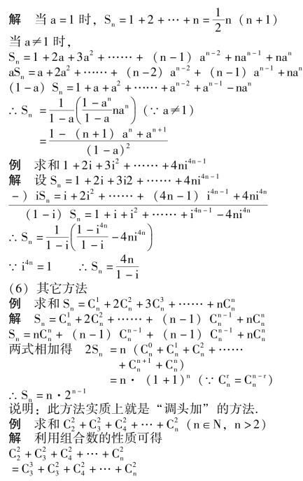
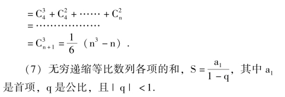
【数列的递推式】
表示数列相邻几项的关系式叫递推式，一个数列可以由其通项公式来确定，也可以由数列的初始条件及递推式来确定.例如，已知a1＝3，an＋1＝2an ＋1 (n∈N) 则这个数列就是3，7，15，31，……2n＋1－1，…….又如a1＝1，a2＝1，an＋2＝an＋1＋an(n∈N) 则这个数列就是1，1，2，3，5，8，……即菲波那契数列.
【演绎法】
如果一般的命题是已经证明了的，或者是未经证明而作为真理用的，那么以这个一般命题推出的每一个特殊命题也就是正确的.象这样由一般到特殊的推理方法，通常称为演绎推理或者演绎法.
【归纳法】
先考察一些特殊的事例，然后分析它们共同具有的特征，作出一般的结论.象这样由特殊到一般的推理方法通常称为归纳推理，或者归纳法.
例 考察多项式x2＋x ＋11 的值.
12＋1 ＋11 ＝13
22＋2 ＋11 ＝17
32＋3 ＋11 ＝23
42＋4 ＋11 ＝31
………………
由此可归纳出，当x 取自然数时，多项式x2＋x ＋11的值一定是质数.
【不完全归纳法】
可能导致错误结论的归纳法，叫做不完全归纳法.
【完全归纳法】
作为结论依据的观察，如果包含了规律所涉及的一切现象，这种归纳法叫做完全归纳法.由完全归纳所得出的结论是可靠的.
【数学归纳法】
是完全归纳法.它是一种归纳——演绎的推理方法.
数学归纳法的理论依据是“自然数归纳原理”:
设A (n) 表示关于自然数n 的一命题，如果满足条件: (i) A (1) 正确；(ii) 假设A (k) 成立，推断A(k ＋1) 也成立、那么A (n) 对一切自然数n 都成立.
其中第(i) 是验证，它是证明的基础；第(ii) 是以假设A (k) 成立，通过演绎推理，推证出A (k ＋1)也正确.
例 求证下列恒等式，其中n∈R.
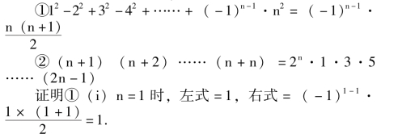
∴左式＝右式
(ii) 假设n ＝k 时等式成立.即
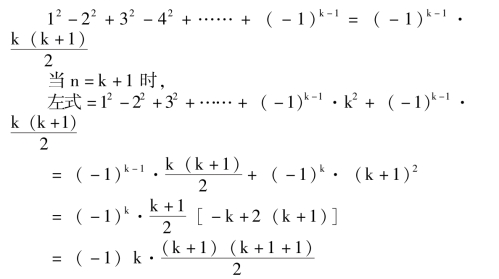
即n ＝k ＋1 时，等式也成立
由(i) 和(ii) 可知等式对任何自然数n 都成立.
②(i) n ＝1 时，左式＝1 ＋1 ＝2.右式＝21·1 ＝2.∴左式＝右式
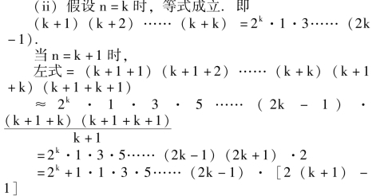
即当n ＝k ＋1 时等式也成立.
由(i) 和(ii) 可知等式对任何n∈N 成立.